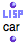
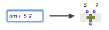

OpenMusic DocumentationHiérarchie de section : OM 6.6 User Manual > Visual Programming I > Boxes > Function Boxes
OpenMusic DocumentationHiérarchie de section : OM 6.6 User Manual > Visual Programming I > Boxes > Function Boxes
Navigation : page précédente | page suivante
Attention, votre navigateur ne supporte pas le javascript ou celui-ci à été désactivé. Certaines fonctionnalités de ce guide sont restreintes.
Function Boxes
Functions are fundamental components of programs, and are some of the most important OM tools. A function box refers to an underlying function that allows to execute a given operation. It has a number of arguments[1], or parameters, which generally represent data to be transformed.
There are two main types of function boxes : OM functions and Lisp functions . Both function types are used in patches following the same modalities.
Adding Functions in a Patch
Functions can be added
via the
Functionsmenuthe Library window
typing a name in a patch editor.
How to Add a Function Into a Patch Editor
The Two Types of Functions : OM Functions and Lisp Functions
OM Functions
| OM functions are specifically declared and assigned particular graphical properties : an icon, default inputs, etc. In other words, they have been designed for OM. |
Lisp Functions
|  | Lisp functions are defined in the Lisp standard programming language. Their differ from OM functions by their "LISP" icon. |
Most of the time, it is necessary to type the name of such a function to add it in a patch, for Lisp functions are not provided in the OM menus.
However, a set of useful Lisp functions is accessible
- through the
Function / OM Kernel / Lispmenu - in the OM Kernel / Lisp package of the Library.
Box Inputs
A function box has a number – 0 or more – of inputs, which represent the arguments[1] of the function. The inputs of a box initially come with default values. Nevertheless, they do not necessary enable correct computations : their values must be set by the user or be connected to other boxes' outputs. |

An addition with and without the default values of OM+
|
Input Tooltips and Function Documentation
Tip : Editing Default Values
Simple input values can be set directly when typing the name of the function box. |

|
Box Outputs
Reminder
Box outputs can be evaluated and used for connections with other boxes.
- To evaluate a function box, select it and press
v. - To evaluate a specific output,
Cmdclick on it.
The result of the computation is given instantly in the Listener[2] window.
Multiple outputs

Om// performs an euclidean division : its first output returns a quotient, its second output returns a rest. The evaluation of the "rest" output necessarily triggers the evaluation of the whole function.
|
A function box may have several outputs, which means that it can return multiple values.
|
About Evaluation Specificites
Multiple Outputs : Evaluate-Once Mode
Om-random returns a random number between a minimum and a maximum value.
|
The " evaluate-once " mode is generally useful for multiple outputs function boxes : the result of a same evaluation is sent to all connected boxes. Otherwise, each of them will evaluate the function box separately :
Here, in the first case, om-random is on the standard evaluation mode and returns two different results to each input of list, as shown in the text box below. In the second case, it returns the same result. |
More Information about EvalOnce and Other Evaluation Modes
Methods
In theory, standard Lisp functions are not typed explicitly : their arguments are not predefined, and they are supposed to accept any type of argument. However, internal errors may still occur if the input data is not of the expected type.
On the contrary, most OM functions actually refer to what is known as generic functions[3]. In CLOS[4], a generic function is a kind of "meta" function that applies to several distinct types of arguments[1] via several methods[5]. Each method is specialized to adapt the behaviour of the function – the way it operates – to the type of argument it is assigned. Hence, the input data is "filtered" before computation starts and the relevant method is applied to it.
For instance, a generic function "OM+" has set 4 different methods, and is able to receive 1) two numbers, 2) a number + a list, 3) a list + a number, or 4) two lists.
There exist several ways to check which type of argument can be connected to a function :
- In the Generic Function editor (by double-clicking the function box
- for OM Generic Functions only)
The Generic Function Editor
- In the source code finder of the function (typing
e)
Editing the OM sources
- (Sometimes) in the reference documentation of the function (typing
d)
Box Documentation
Calling Methods with Wrong Input Types
In a patch, "calling" – using – a generic function with the wrong types of arguments, triggers an error message of the type : "No method is defined for this type of box ...". For instance, this can occur if a function is connected to a data type it cannot accept.
Here is a widespread error when using object boxes : In this example, we want to transpose a chord using OM+. To execute an operation, a function must apply to the right argument : the relevant output must be connected to the function. No method is defined in OM+ for arguments of type chord, so the "self" (1st) ouput of the chord box can not be connected to this function box. The "pitch" output (which returns a list of numbers) should be connected instead. |
{kind=link}
Object Box Inputs and Outputs
Références :
Argument
An argument represents a parameter upon which a function operates. For instance, the (om+ x y) function has two arguments : x and y.
Lisp Listener
A Lisp communication interface displaying results of computations, warnings or error messages, and where Lisp expressions – programs – can be evaluated.
Generic Function
In object oriented programming, a generic function is a collection of methods – elementary specialized functions – with the same name and argument structure, but with arguments typed differently.
See also : Method
CLOS – Common Lisp Object System –
CLOS is an object-oriented programming protocol defined in the Common Lisp language specification. It is based on classes, instances of classes, generic functions and methods to be used in Lisp programs.
See also : Class, Function, Generic Function, Method, Instance.
Method
An elementary function or part of a generic function defining rules for its behaviour depending on a type of argument. Defining a generic function amounts to defining at least one method.
For instance, the OM+ function is made of four methods : 1. number + list / 2. list + number / 3. number + number / 4. list + list
Plan :
Navigation : page précédente | page suivante
A propos...(c) Ircam - Centre Pompidou